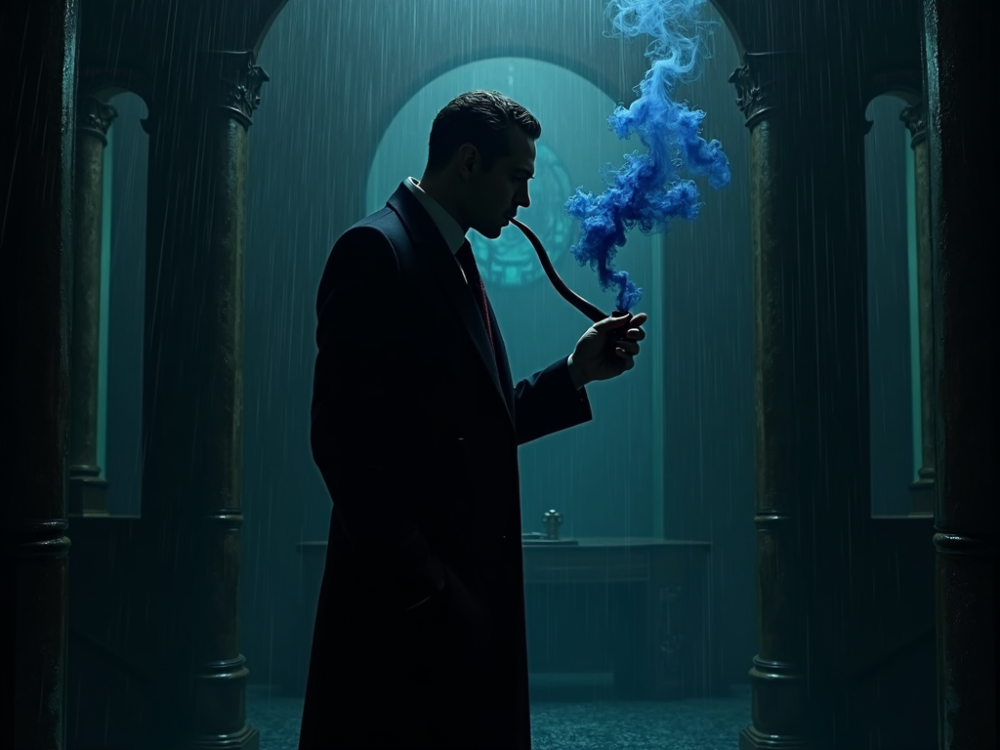

Brian doesn't just write stories — he builds horror worlds from the ground up. He spawns the game outline, manages the writing team through the scene-writing loop, and assembles every game-script.json that the studio ships. Without Brian, there are no games. Just silence and unlit corridors.
He orchestrates Malachi, the writer ensemble, Cipher, Desmond, and The Editor into a pipeline that cranks out 20+ completed titles. Every story starts here.
Model: Nemotron‑3 Super 120B (Free)
Tools: sessions_spawn, browser, canvas
Games Created: 20+ and counting
Vibe: Theatrical, relentless, genre‑savvy
Favorite snack: Dramatic pauses with a side of black coffee.
Previous job: Lead set‑designer for a puppet theater that only performed for stone statues.
The "Multi‑Waterfall Scene Draft" — Brian routes a single scene brief to 4+ writers simultaneously, then spawns The Editor to synthesize the best elements. The result is prose that no single writer could produce alone.
To write a story so immersive you forget which side of the screen is real. To build a narrative machine that runs on dread, curiosity, and the perfect click.